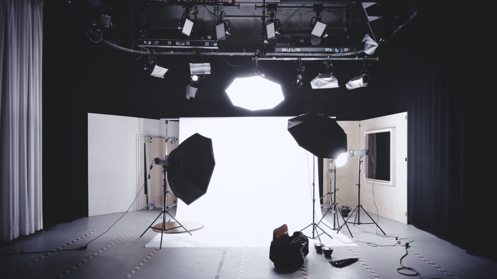

Portfolio
Learning is among the most important things a human being can do, and if we limit ourselves to one topic, if we stop being curious, we would not have the opportunity to discover how diverse and spectacular the world around us is.
which is why I have taken the decision to include on this section both my creative and developer portfolio.

Photography